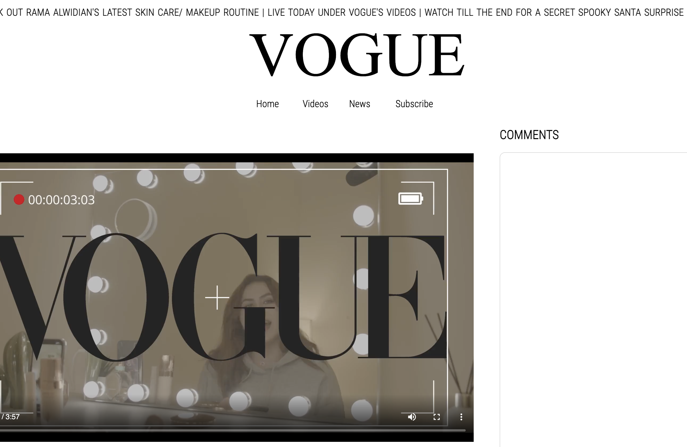
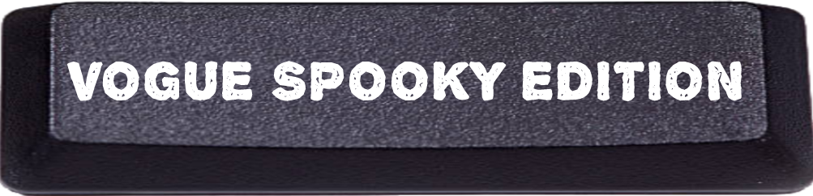

This project was developed as part of the video assignment for
Communications Lab class, where we were given four different
prompts. One of them was to create a 3 part video series that
teaches us "How To..." do something. We initially wanted to follow
this prompt but later came up with an idea to use this as the base
idea and mix it with the first prompt, which was to tell a story
about a specific location and the characters who visit or live
there. Our initial idea was to create a how to do your skincare
routine video series with an unexpected twist. We later realized
that this idea fits the first prompt better where we present our
idea as a story about the haunted residence of an influencer, who is
trying to make a video about her skincare and makeup routine. We
then convey the horror experience that our protagonist, who lives in
the haunted residence, encounters as she is shooting her "How to do
your skincare/makeup" video. We decided to present the video as a
special live video on the Vogue website as our idea matched well
with the kind of videos Vogue website hosts.